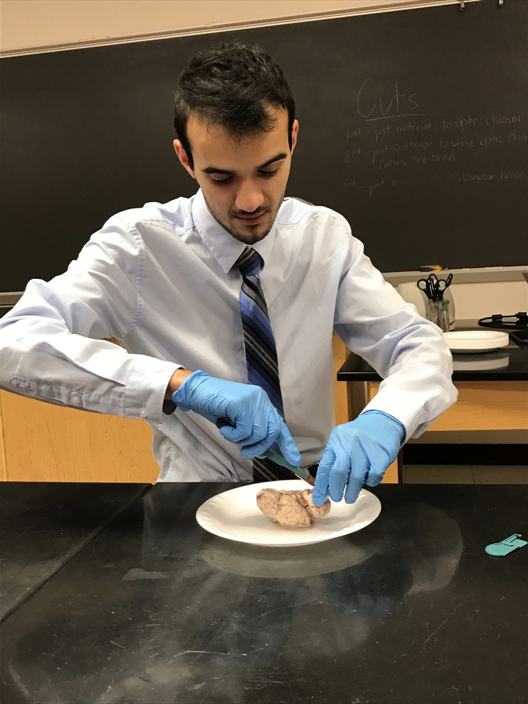

 Hi my name is Fatgezim Bela and I am a future software developer. I have been married for a little over a month and hope to be able to use this bootcamp to be able to work more from home to spend more time with my lovely wife. I graduated from George Mason University in 2018 with a degree in neuroscience. I work at Mil-Tek as a logistics analyst. I love soccer and snowboarding and eventually plan on going to medical school for my MD. Once I get my MD I would like to specalize in neurosurgery. As a neurosurgen I want to sub specialize in pediatrics.